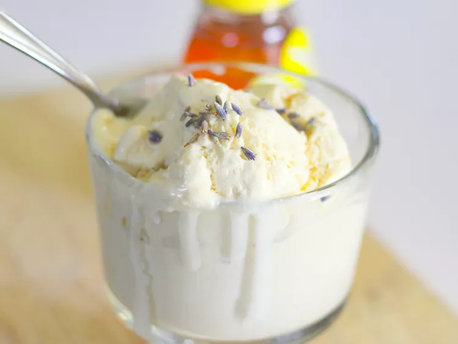

Lavender Honey Icecream

A sweet homemade icecream good for any hot summer day!
Ingredients
- 2 cups heavy whipping cream
- 1 cup half & half
- 2/3 cup honey
- 2 tablespoons dried lavender flowers
- 2 eggs
- 1/8 teaspoon salt
Steps
- Heat heavy cream, half & half, honey, and lavender flowers in a heavy 2-quart saucepan, stirring constantly, until cream just starts to bubble. Remove from heat and cover; let steep for 30 minutes.
- Strain cream mixture into a bowl using a fine-mesh sieve. Discard lavender flowers. Clean saucepan and pour strained cream mixture back in. Heat over medium heat until hot, about 5 minutes.
- Whisk eggs and salt together in a bowk. Whisk in 1 cup hot cream in a slow stream.
- Pour egg mixture into the remaining hot cream in the saucepan. Cook over medium-low heat,stirring constantly with a wooden spoon, until custard coats the back of the spoon and reads 175 degrees F on an instant thermometer, about 5 minutes.
- Pour custard through a fine-mesh sieve into a bowl. Let cool completely, stirring occasionally, about 15 minutes. Chill, covered, for at least 3 hours.
- Freeze custard in an icecream maker according to manufacturer's instructions, about 20 minutes. Transfer to an airtight container and place in the freezer to firm up.